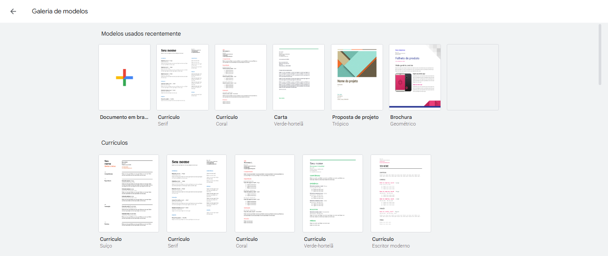

O Que Você Vai Aprender
- Como criar um currículo simples e profissional no Google Docs usando templates prontos
- Como se cadastrar nos 3 principais sites de emprego: Indeed, LinkedIn e SINE Digital
- Como configurar alertas automáticos de vagas para receber oportunidades por e-mail
- Como preencher seu perfil básico do LinkedIn com foto, resumo e experiências
- Quais palavras-chave usar no currículo para chamar atenção dos recrutadores
- Como escrever uma carta de apresentação simples e efetiva
- Como fazer um curso gratuito rápido com certificado no Google Ateliê Digital
- Dicas práticas: personalizar currículo, responder rápido e fazer follow-up
Antes de Começar: Você vai precisar de computador ou celular com internet, conta de e-mail ativa, conta Google (Gmail), uma foto sua em ambiente neutro, informações sobre suas experiências anteriores e cerca de 2 horas livres para fazer tudo com calma. Este tutorial vai te ensinar o que realmente funciona!
1
Criar Currículo no Google Docs (Template Pronto)
Por que no Google Docs: É gratuito, tem templates prontos e profissionais, você pode acessar de qualquer lugar e compartilhar facilmente!
Como criar seu currículo:
- Acesse:
docs.google.com (faça login com sua conta Gmail)
- Clique em "Galeria de modelos" no topo da página
- Role até a seção "Currículos"
- Escolha um modelo simples e profissional (recomendo: "Serif" ou "Spearmint")
- Clique no modelo escolhido - ele abre automaticamente para edição
- Substitua as informações do exemplo pelas suas próprias informações
O que incluir no currículo (estrutura básica):
- Cabeçalho: Seu nome completo, telefone, e-mail profissional, cidade
- Objetivo: 2-3 linhas sobre a vaga que você busca
- Experiência Profissional: Empregos anteriores (cargo, empresa, período, principais atividades)
- Formação: Escola, cursos técnicos, faculdade (se tiver)
- Cursos e Certificações: Cursos extras que você fez
- Habilidades: Computador, idiomas, softwares que domina

Templates profissionais de currículo disponíveis no Google Docs
Salvando o currículo: Depois de preencher, vá em Arquivo > Fazer download > PDF. Salve com o nome: "Curriculo_SeuNome.pdf". PDFs são aceitos em todos os lugares!
Evite erros comuns: Não use e-mails não profissionais (tipo "gatinha123@"), não coloque foto no currículo (a menos que seja pedido), não minta sobre experiências, e sempre revise ortografia!
2
Cadastrar-se nos 3 Principais Sites de Emprego
Estratégia inteligente: Não fique só em um site! Cadastre-se nos 3 principais para ter mais chances de ser visto por recrutadores.
Site 1: Indeed (indeed.com.br)
- Acesse:
www.indeed.com.br
- Clique em "Cadastre-se" no canto superior direito
- Escolha cadastro com Google (mais rápido) ou e-mail
- Preencha seu perfil básico: nome, cidade, telefone, área de interesse
- Faça upload do seu currículo em PDF
- Defina seu "alerta de vagas" (explicado no próximo passo)
Site 2: LinkedIn (linkedin.com)
- Acesse:
www.linkedin.com
- Clique em "Cadastre-se"
- Crie sua conta com e-mail profissional
- Adicione uma foto profissional (fundo neutro, sorrindo, sem filtros)
- Preencha seu título profissional (ex: "Assistente Administrativo" ou "Vendedor")
- Complete seu perfil aos poucos (vamos detalhar no passo 4)
Site 3: SINE Digital (sine.com.br)
- Acesse:
www.sine.com.br
- Clique em "Candidato" e depois "Cadastrar"
- Preencha: CPF, nome completo, e-mail, telefone
- Crie uma senha
- Confirme cadastro pelo e-mail enviado
- Faça login e complete seu perfil com experiências e formação
- Anexe seu currículo
Por que cadastrar nos 3? Cada site tem vagas diferentes! Indeed tem muitas empresas privadas, LinkedIn é ótimo para networking e o SINE tem vagas de empresas que contratam via governo. Você multiplica suas chances!
3
Configurar Alertas Automáticos de Vagas
Trabalhe menos, receba mais: Em vez de ficar procurando vagas todos os dias, deixe que elas cheguem até você por e-mail!
Como configurar no Indeed:
- Faça uma busca por uma vaga que te interessa (ex: "vendedor Brasília")
- Logo acima dos resultados, clique no botão "Criar alerta"
- Escolha a frequência: "Diariamente" (recomendado)
- Confirme seu e-mail
- Pronto! Você receberá e-mails diários com novas vagas que combinam com sua busca
Como configurar no LinkedIn:
- Na barra de busca do LinkedIn, procure por "Vagas"
- Filtre por: localização (Brasília/DF), tipo de vaga, área
- Clique no ícone de "sino" ou "criar alerta"
- Dê um nome para o alerta (ex: "Vagas Vendas DF")
- Escolha frequência: Diariamente
- Salve o alerta
Como configurar no SINE:
- Faça login no SINE Digital
- Vá em "Vagas disponíveis"
- Use os filtros: cidade, área de atuação, salário
- Clique em "Receber alertas por e-mail"
- Escolha os filtros que deseja monitorar
- Ative as notificações
Dica de ouro: Quando receber um alerta de vaga nova, candidate-se nas primeiras 24 horas! Recrutadores olham primeiro quem se candidata mais rápido. Você terá mais chances de ser chamado!
4
Preencher Perfil Básico do LinkedIn
LinkedIn é sua vitrine profissional: Um perfil bem preenchido pode fazer recrutadores te encontrarem sem você precisar procurar vagas!
1. Foto de Perfil
- Use uma foto profissional: fundo neutro, sozinho, sorrindo levemente
- Vista-se como vestiria para uma entrevista
- Não use: selfies com amigos, fotos de festa, filtros, foto de corpo inteiro
- Dica: tire a foto na luz natural, de frente para uma parede clara
2. Título Profissional
- Vai logo abaixo do seu nome
- Seja específico e direto (ex: "Assistente Administrativo | Atendimento ao Cliente")
- Inclua palavras-chave da sua área
- Se está procurando emprego, pode colocar: "Profissional de [área] | Em busca de novas oportunidades"
3. Resumo (Sobre)
Escreva 3-5 linhas sobre você. Mencione sua experiência, suas principais habilidades e o que você busca.
Exemplo: "Profissional com 5 anos de experiência em atendimento ao cliente e vendas. Especializado em resolver problemas e garantir satisfação do cliente. Busco oportunidades em empresas que valorizam dedicação e crescimento profissional."
4. Experiência
- Adicione seus empregos anteriores
- Para cada um, coloque: cargo, empresa, período (mês/ano), descrição das atividades
- Use verbos de ação: "Realizei", "Gerenciei", "Atendi", "Desenvolvi"
- Mencione resultados quando possível (ex: "Aumentei vendas em 20%")
Meta de completude: LinkedIn mostra uma barra de "Nível de perfil". Tente chegar a "Intermediário" ou "Completo". Perfis completos aparecem mais nas buscas de recrutadores!
5
Palavras-Chave: O Segredo para Ser Encontrado
Como recrutadores buscam: Eles digitam palavras-chave nos sites de emprego. Se seu currículo não tem essas palavras, você não aparece nos resultados!
Como encontrar as palavras-chave certas:
- Leia atentamente as descrições de vagas que te interessam
- Anote as palavras que aparecem com frequência (habilidades, ferramentas, responsabilidades)
- Inclua essas palavras no seu currículo e perfil do LinkedIn
Exemplos de Palavras-Chave por Área
| Área |
Palavras-Chave Importantes |
| Administrativo |
Excel, Word, atendimento, organização, arquivo, gestão de documentos, agendamento, office |
| Vendas |
Metas, prospecção, negociação, pós-venda, CRM, relacionamento, fechamento, produtos |
| Atendimento |
Relacionamento, SAC, call center, resolução de problemas, comunicação, empatia, suporte |
| Logística |
Estoque, separação, expedição, inventário, armazenagem, carga/descarga, controle |
| Tecnologia |
Programação, desenvolvimento, sistemas, suporte técnico, redes, manutenção, software |
Por que palavras-chave importam? Muitas empresas grandes usam sistemas automatizados (ATS) que filtram currículos por palavras-chave ANTES de um humano ver. Se você não tem as palavras certas, seu currículo é descartado automaticamente!
6
Escrever Carta de Apresentação Simples
O que é: Um texto curto (5-7 linhas) que acompanha seu currículo explicando por que você é ideal para a vaga.
Estrutura da carta de apresentação:
- Linha 1: Cumprimente e diga para qual vaga está se candidatando
- Linhas 2-4: Destaque 2-3 experiências/habilidades relevantes para a vaga
- Linhas 5-6: Explique por que quer trabalhar naquela empresa
- Linha 7: Agradeça e se coloque à disposição
Modelo Prático (copie e adapte)
Prezado(a) Recrutador(a),
Venho por meio desta me candidatar à vaga de [NOME DA VAGA] disponibilizada pela [NOME DA EMPRESA]. Possuo [X anos] de experiência em [SUA ÁREA], onde desenvolvi habilidades em [HABILIDADE 1], [HABILIDADE 2] e [HABILIDADE 3].
Tenho grande interesse em fazer parte da equipe da [NOME DA EMPRESA] pela sua reconhecida atuação em [MENCIONE ALGO SOBRE A EMPRESA]. Acredito que posso contribuir significativamente com minha experiência e dedicação.
Agradeço a atenção e estou à disposição para uma entrevista.
Atenciosamente,
[SEU NOME COMPLETO]
[SEU TELEFONE]
[SEU E-MAIL]
SEMPRE personalize! Nunca envie a mesma carta genérica para todas as vagas. Troque o nome da empresa, da vaga e adapte as habilidades de acordo com o que é pedido. Recrutadores percebem cartas "copia e cola" e descartam!
7
Fazer Curso Gratuito com Certificado
Turbine seu currículo: Fazer cursos online gratuitos com certificado mostra que você busca se qualificar e se destaca de outros candidatos!
Google Ateliê Digital (RECOMENDADO)
- Acesse:
ateliedigital.withgoogle.com
- Clique em "Cadastre-se gratuitamente"
- Faça login com sua conta Google
- Escolha um dos cursos básicos (recomendamos "Fundamentos do Marketing Digital")
- Assista às video-aulas (pode ser no celular, no ônibus, quando tiver tempo)
- Faça os exercícios ao final de cada módulo
- Ao concluir, você recebe o certificado digital
- Baixe o certificado em PDF e adicione no LinkedIn e no currículo
Outros cursos gratuitos com certificado
- Fundação Bradesco: Cursos de informática, Excel, atendimento
- SENAI: Cursos técnicos curtos online
- Coursera: Cursos de universidades (alguns gratuitos)
- SEBRAE: Cursos de empreendedorismo e gestão
- FGV Online: Cursos de administração e finanças
Por que fazer? Certificados provam que você busca conhecimento. Em vagas com muitos candidatos, quem tem cursos extras se destaca! Além disso, você realmente aprende coisas úteis para o trabalho.
Quanto tempo leva? Os cursos básicos do Google Ateliê levam de 3 a 8 horas totais. Você pode fazer no seu ritmo, pausar e voltar quando quiser. Faça um pouco todo dia e em 1 semana você termina!
8
Dicas Finais: Personalizar, Responder Rápido e Follow-up
O que realmente funciona: Pequenos detalhes fazem toda a diferença. Veja as estratégias que aumentam suas chances!
Personalize cada candidatura
- Leia a descrição completa da vaga antes de se candidatar
- Adapte seu currículo destacando experiências relacionadas àquela vaga
- Mencione o nome da empresa na carta de apresentação
- Não envie o mesmo currículo genérico para todas as vagas
Responda RÁPIDO aos alertas
- Candidate-se nas primeiras 24 horas após a vaga ser publicada
- Vagas populares recebem centenas de candidaturas - quem chega primeiro tem mais chance
- Configure notificações no celular para não perder oportunidades
- Tenha seu currículo sempre atualizado para enviar rapidamente
Faça follow-up após se candidatar
- Se a vaga tem contato da empresa, envie um e-mail educado 3-5 dias depois
- Reforce seu interesse pela vaga e pergunte sobre o andamento do processo
- Seja breve e profissional - 4-5 linhas no máximo
- Exemplo: "Bom dia! Me candidatei à vaga de [cargo] dia [data] e gostaria de saber sobre o andamento. Continuo muito interessado(a). Obrigado(a)!"
Mantenha-se ativo no LinkedIn
- Compartilhe conteúdos relacionados à sua área 1-2 vezes por semana
- Comente em posts de empresas que você admira
- Conecte-se com profissionais da sua área
- Atualize seu perfil sempre que fizer novos cursos ou conquistas
Cuidado com golpes: Empresas sérias NUNCA pedem dinheiro antecipado para processos seletivos! Desconfie de vagas com salários muito altos sem requisitos, pedidos de depósito para "material" ou "treinamento". Se parece bom demais para ser verdade, provavelmente é golpe!
Checklist: Sua Estratégia Completa
| Ação |
Prioridade |
Status |
| Criar currículo profissional no Google Docs |
ALTA |
☐ |
| Cadastrar no Indeed |
ALTA |
☐ |
| Criar perfil no LinkedIn |
ALTA |
☐ |
| Cadastrar no SINE Digital |
ALTA |
☐ |
| Configurar alertas de vagas nos 3 sites |
ALTA |
☐ |
| Adicionar palavras-chave no currículo |
MÉDIA |
☐ |
| Preparar carta de apresentação modelo |
MÉDIA |
☐ |
| Fazer curso gratuito com certificado |
MÉDIA |
☐ |
| Adicionar certificado no LinkedIn e currículo |
MÉDIA |
☐ |
| Candidatar-se a pelo menos 5 vagas por semana |
ALTA |
☐ |
Dúvidas Comuns
1. Preciso ter LinkedIn? Não basta o Indeed e SINE?
Resposta: LinkedIn é MUITO importante! Muitas empresas procuram candidatos direto no LinkedIn sem nem publicar vagas. Além disso, ter um perfil profissional lá mostra que você está atualizado. É gratuito e vale muito a pena investir tempo para preencher bem.
2. Quantas vagas devo me candidatar por dia?
Resposta: Qualidade é melhor que quantidade! É melhor se candidatar a 2-3 vagas por dia COM currículo personalizado do que mandar 20 currículos genéricos. Mas mantenha uma meta mínima: pelo menos 5 candidaturas por semana. Seja consistente!
3. Devo colocar pretensão salarial no currículo?
Resposta: NÃO, a menos que seja pedido expressamente na vaga. Colocar salário no currículo pode te eliminar antes mesmo da entrevista - ou por pedir muito ou por pedir pouco. Deixe para negociar salário depois que a empresa demonstrar interesse em você!
4. Posso mentir ou "aumentar" minhas experiências no currículo?
Resposta: NUNCA! Empresas verificam referências e podem pedir comprovantes. Mentir no currículo é motivo de demissão por justa causa se for descoberto depois. Seja honesto, mas saiba VALORIZAR o que você realmente fez. Por exemplo, em vez de "fazia atendimento", escreva "realizava atendimento ao cliente garantindo satisfação e fidelização".
5. Não tenho experiência formal. Posso me candidatar mesmo assim?
Resposta: SIM! Procure vagas que dizem "Vaga para primeiro emprego" ou "Não exige experiência". Destaque seus cursos, trabalhos voluntários, projetos pessoais ou até experiências informais que tenham relação com a vaga. Todos começaram do zero um dia!
Dicas Extras de Ouro
1. Crie uma rotina de busca: Reserve 1 hora por dia (ou 30 min de manhã + 30 min à noite) para procurar vagas e se candidatar. Faça disso um hábito. Quanto mais consistente, mais rápido encontra emprego!
2. Tenha um e-mail profissional: Se seu e-mail atual é tipo "gatinha123@" ou "meninodelas@", crie um novo e-mail profissional com seu nome: "joao.silva.rj@gmail.com". Recrutadores levam isso a sério!
3. Peça indicações: Conte para amigos, familiares e conhecidos que você está procurando emprego. Muitas vagas são preenchidas por indicação antes mesmo de serem divulgadas! Networking é poderoso.
4. Prepare-se para entrevistas: Pesquise perguntas comuns de entrevista no Google e treine suas respostas. Principais: "Fale sobre você", "Por que quer trabalhar aqui?", "Quais seus pontos fortes e fracos?". Pratique em voz alta!
5. Acompanhe suas candidaturas: Crie uma planilha simples: data, empresa, cargo, site, status. Assim você sabe para onde já enviou currículo e pode fazer follow-up organizado. Use o Google Planilhas (gratuito)!
Resolvendo Problemas Comuns
Problema: Me candidato mas nunca recebo resposta
Solução:
- Revise seu currículo: pode estar com informações confusas ou erros de português
- Certifique-se de que está se candidatando a vagas compatíveis com seu perfil
- Personalize cada candidatura em vez de enviar currículo genérico
- Verifique se seu e-mail de contato está correto e funcionando
- Melhore seu perfil do LinkedIn - muitos recrutadores buscam lá antes
- Lembre-se: é normal não receber resposta de todas. Continue se candidatando!
Problema: Não sei como destacar experiências básicas
Solução:
- Use verbos de ação: em vez de "responsável por", use "executei", "realizei", "gerenciei"
- Adicione resultados: "Atendi clientes" vira "Atendi em média 30 clientes por dia mantendo 95% de satisfação"
- Inclua soft skills: "Trabalhei em equipe", "Resolvi conflitos", "Cumpri prazos"
- Valorize trabalhos informais: "Vendi doces" vira "Desenvolvi habilidades de vendas e relacionamento com clientes"
Problema: Não consigo fazer cursos longos por falta de tempo
Solução:
- Comece por cursos CURTOS: Google Ateliê tem cursos de 3-5 horas totais
- Faça 20-30 minutos por dia: no ônibus, na fila, antes de dormir
- Priorize cursos da sua área de interesse para ter mais motivação
- Lembre-se: terminar UM curso é melhor que começar cinco e não terminar nenhum
- Use finais de semana para avançar mais nos módulos
Parabéns! Você Concluiu Este Tutorial!
Agora você sabe:
- Criar currículo profissional no Google Docs
- Cadastrar-se nos principais sites de emprego
- Configurar alertas automáticos de vagas
- Preencher perfil do LinkedIn corretamente
- Usar palavras-chave para ser encontrado
- Escrever cartas de apresentação
- Fazer cursos gratuitos com certificado
- Estratégias que realmente funcionam
Próximo passo: Use o checklist deste tutorial, comece pelas tarefas de prioridade ALTA e seja consistente. Procurar emprego é um trabalho temporário até você conseguir O trabalho!